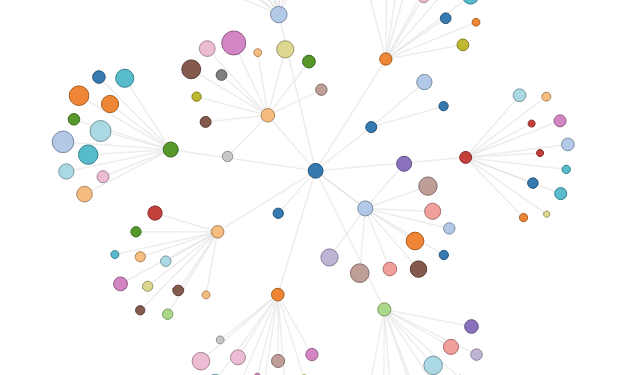
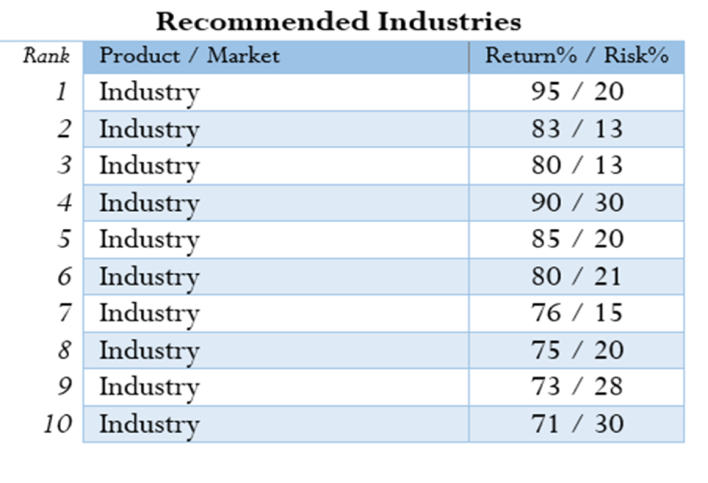

What's DevGPS?
DevGPS is a user-friendly data-driven tool to help communities understand their best opportunities to create new jobs and economic growth. It learns about what an area does, what it could do, and then generates customized recommendations to make an area as competitive as possible.
Stronger Networks = More Opportunities for Growth
We think about economies as driven by networks of people who use their unique skills to solve problems. Network effects allow bigger groups with more complex skills to solve bigger, more complex problems. That does not mean small groups can't compete - it just means that they need to be strategic. By understanding what you can do, what you could do, and how to get there, an area can make itself as competitive as possible. It can also better invest its limited resources.
In addition to learning about the amount of activity, DevGPS uses an Economic Network Rating (ENR) to measure how "connected" an area is. ENR not only measures the amount of activity, but the relative interconnectedness of those activities as compared to the rest of the country.
Takeaway: Cities with higher ENR have higher GDPs per Capita
Tupelo, MS: [takeaway]
Takeaway: Tupelo's economy is xyz
Tupelo's future is in abc
The ability to do one thing connects to the ability to do other things. Explain more about networks here.
These are the industries that Tupelo should target in order to maximize its potential. DevGPS recommends different industries for every area.
Takeaway: Tupelo's future is in xyz
DevGPS will help your city asses its economy and plan for its future
Just like Amazon identifies the next most likely thing you want to buy, and Google identifies the next most likely thing you want to click, DevGPS is working to identify the next most likely industry a region can do.
Economic growth is one of the most important goals of local governments, yet policy makers often lack clear data-driven tools to evaluate growth strategies. This leads to sub-optimal utilization of their limited resources, which can lead to less jobs created and lower economic growth rates. DevGPS is committed to facilitating targeted economic growth strategy that creates more jobs and economic growth.